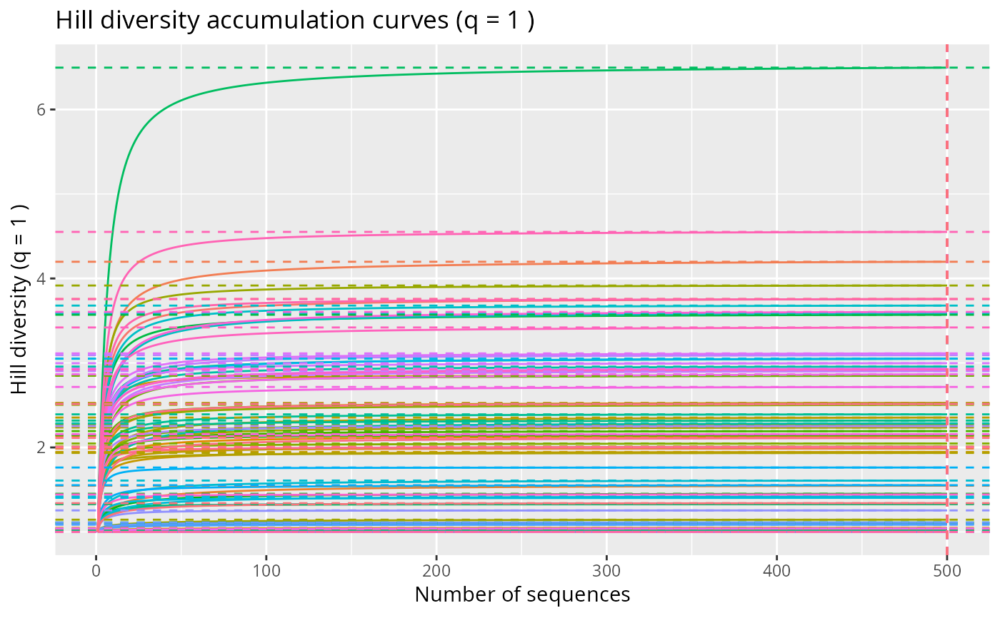
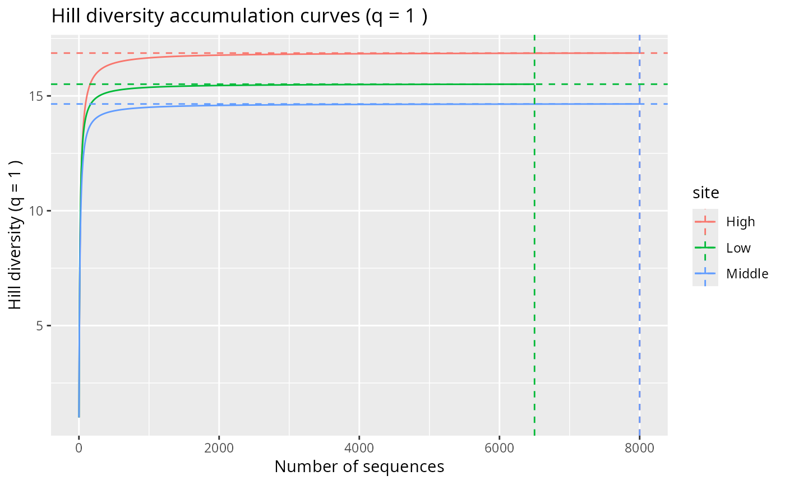
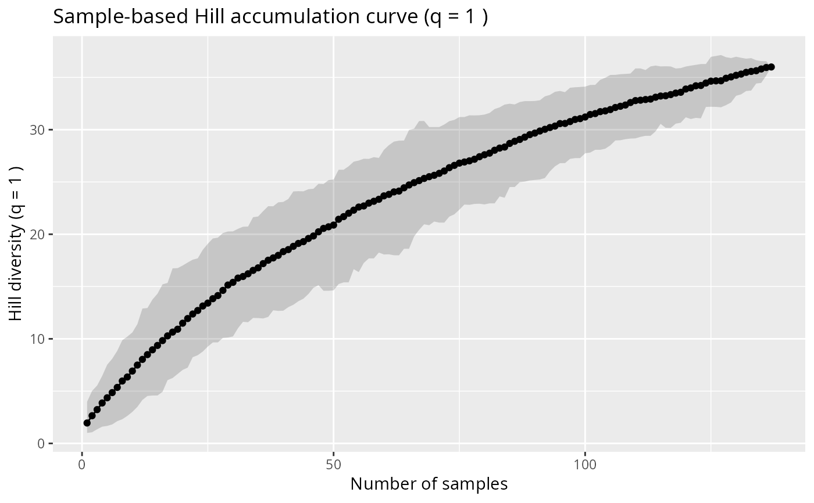
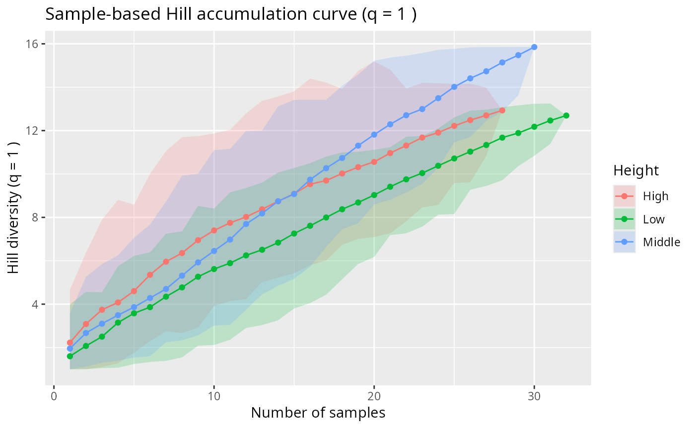

Hill diversity accumulation curve for a phyloseq object (default: q = 1)
Source:R/hill_divent.R
hill_acc_pq.Rd
Computes Hill diversity accumulation curves from a phyloseq object
and returns a ggplot2 object.
Two types of curves are available:
type = "individual"(default): individual-based (sequence-based) rarefaction/extrapolation curves viadivent::accum_hill(), with one curve per sample (or per merged group).type = "sample": sample-based accumulation curve. Samples are pooled incrementally (over random permutations) and Hill diversity is computed at each step usingdivent::div_hill(). The x-axis represents the number of samples.
Usage
hill_acc_pq(
physeq,
q = 1,
type = c("individual", "sample"),
merge_sample_by = NULL,
n_permutations = 100,
conf_level = 0.95,
...
)Arguments
- physeq
(required) a
phyloseq-classobject obtained using thephyloseqpackage.- q
(numeric, default 1) Hill diversity order. Default is 1 (exponential of Shannon entropy), recommended for its robustness against rare and potentially erroneous sequences (Alberdi & Gilbert, 2019; Calderón-Sanou et al., 2019).
- type
(character) Type of accumulation curve. Either
"individual"(sequence-based, one curve per sample) or"sample"(sample-based, one curve for the whole dataset or per group).- merge_sample_by
(character or NULL) Variable name in
sam_dataused to group samples. Behaviour differs bytype:type = "individual": samples are merged before computing curves (one curve per merged group, usingmerge_samples2()).type = "sample": samples are split by group and one accumulation curve is drawn per group, all on the same plot.
- n_permutations
(integer, default 100) Number of random sample orderings used to compute the mean and confidence envelope for sample-based accumulation. Ignored when
type = "individual".- conf_level
(numeric, default 0.95) Confidence level for the envelope around sample-based accumulation curves. Ignored when
type = "individual".- ...
Additional arguments passed to
divent::accum_hill()(whentype = "individual") ordivent::div_hill()(whentype = "sample").
References
Alberdi, A., & Gilbert, M. T. P. (2019). A guide to the application of Hill numbers to DNA-based diversity analyses. Molecular Ecology Resources. doi:10.1111/1755-0998.13014
Calderón-Sanou, I., Münkemüller, T., Boyer, F., Zinger, L., & Thuiller, W. (2019). From environmental DNA sequences to ecological conclusions: How strong is the influence of methodological choices? Journal of Biogeography, 47. doi:10.1111/jbi.13681
Examples
# \donttest{
# Individual (sequence-based) accumulation curves
hill_acc_pq(rarefy_even_depth (data_fungi_mini, sample.size = 500)) + no_legend()
#> You set `rngseed` to FALSE. Make sure you've set & recorded
#> the random seed of your session for reproducibility.
#> See `?set.seed`
#> ...
#> 58 samples removedbecause they contained fewer reads than `sample.size`.
#> Up to first five removed samples are:
#> A15-004_S3_MERGED.fastq.gzAC29033_S8_MERGED.fastq.gzAD26-005-B_S9_MERGED.fastq.gzB18-006-B_S19_MERGED.fastq.gzBG7-010-H_S31_MERGED.fastq.gz
#> ...
#> Taxa are now in columns.
#> Computing individual-based accumulation curves ■■■ …
#> Computing individual-based accumulation curves ■■■■■■ …
#> Computing individual-based accumulation curves ■■■■■■■■ …
#> Computing individual-based accumulation curves ■■■■■■■■■ …
#> Computing individual-based accumulation curves ■■■■■■■■■■ …
#> Computing individual-based accumulation curves ■■■■■■■■■■■■ …
#> Computing individual-based accumulation curves ■■■■■■■■■■■■■■ …
#> Computing individual-based accumulation curves ■■■■■■■■■■■■■■■ …
#> Computing individual-based accumulation curves ■■■■■■■■■■■■■■■■■ …
#> Computing individual-based accumulation curves ■■■■■■■■■■■■■■■■■■ …
#> Computing individual-based accumulation curves ■■■■■■■■■■■■■■■■■■■■ …
#> Computing individual-based accumulation curves ■■■■■■■■■■■■■■■■■■■■■■ …
#> Computing individual-based accumulation curves ■■■■■■■■■■■■■■■■■■■■■■■■ …
#> Computing individual-based accumulation curves ■■■■■■■■■■■■■■■■■■■■■■■■■■ …
#> Computing individual-based accumulation curves ■■■■■■■■■■■■■■■■■■■■■■■■■■■ …
#> Computing individual-based accumulation curves ■■■■■■■■■■■■■■■■■■■■■■■■■■■■■ …

hill_acc_pq(rarefy_even_depth(data_fungi_mini, sample.size = 500),
n_permutations = 5,
merge_sample_by = "Height"
)
#> You set `rngseed` to FALSE. Make sure you've set & recorded
#> the random seed of your session for reproducibility.
#> See `?set.seed`
#> ...
#> 58 samples removedbecause they contained fewer reads than `sample.size`.
#> Up to first five removed samples are:
#> A15-004_S3_MERGED.fastq.gzAC29033_S8_MERGED.fastq.gzAD26-005-B_S9_MERGED.fastq.gzB18-006-B_S19_MERGED.fastq.gzBG7-010-H_S31_MERGED.fastq.gz
#> ...
#> Warning: `group` has missing values; corresponding samples will be dropped
#> Taxa are now in columns.
#> Computing individual-based accumulation curves ■■■■■■■■■■■ …
#> Computing individual-based accumulation curves ■■■■■■■■■■■■■■■■■■■■■ …

# Sample-based accumulation curve
hill_acc_pq(data_fungi_mini, type = "sample", n_permutations = 50)
#> Taxa are now in columns.
#> Computing sample-based accumulation curves ■■■■■■■ 20…
#> Computing sample-based accumulation curves ■■■■■■■■■■■■■■■■■■■■■■■ 74…

hill_acc_pq(data_fungi_mini, type = "sample", merge_sample_by = "Height")
#> Taxa are now in columns.
#> Computing sample-based accumulation curves ■■■■■■■■■■■■■■■■■ 52…
#> Computing sample-based accumulation curves ■■■■■■■■■■■■■■■■■■■■■■■■ 77…

# }